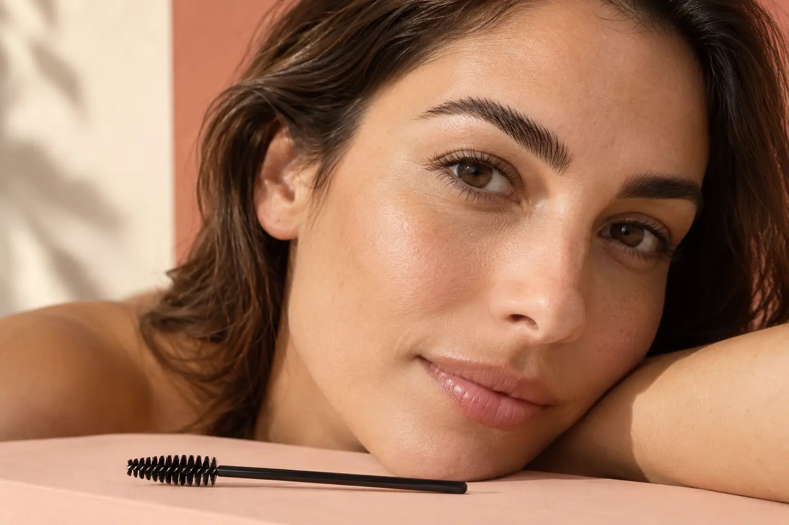

Antakių laminavimas: kaip keičiama plaukelių kryptis ir kas įeina?
Autorius: Madbeauty redakcija · 2026 m. gruodžio 28 d. 16:00 Lietuvos laiku
Kaip antakių laminavimas keičia plaukelių kryptį? Sužinokite, kuo skiriasi laminavimas, dažymas ir korekcija bei kas įeina į pasiūlymą.

Antakių laminavimas padeda pakeisti esamų plaukelių padėtį. Paslaugos pavadinimas savaime nepasako, ar į pasiūlymą įtraukti ir dažymas, formos korekcija ar užbaigimas. Renkantis verta atskirti patį metodą nuo konkrečių darbų sąrašo.
Ką keičia laminavimas
Gamintojo HD Brows aprašyme „BrowSculpt“ laminavimas chemiškai padeda pakeisti esamų antakių plaukelių padėtį, tačiau naujų plaukelių nepriaugina. To paties gamintojo pilname pasiūlyme laminavimas, dažymas, formos korekcija ir užbaigimas išvardyti atskirai. Tai konkrečios sistemos pavyzdys, o ne kiekvieno salono protokolas: HD Brows „BrowSculpt“ aprašymas.
Dažymas ir korekcija – atskiri darbai
Dažymas skirtas antakių atspalviui pakeisti, o formos korekcija nurodo kitą paslaugos dalį. Ar šie darbai įtraukti kartu su laminavimu, reikia tikrinti konkrečiame pasiūlyme. Jei meniu nurodytas tik laminavimas, nereikėtų manyti, kad į kainą įskaičiuotos ir kitos procedūros.
Palyginkite pasiūlymus pagal tai, kas aiškiai įvardyta:
- Ar nurodytas laminavimas, dažymas ir formos korekcija, ar tik dalis šių darbų?
- Ar užbaigimas įtrauktas, ar siūlomas kaip atskira paslaugos dalis?
- Ar aprašyta konkreti naudojama sistema ir jos eiga?
Du panašūs pavadinimai, skirtinga apimtis
Pasiūlymas „Antakių laminavimas“ nusako laminavimo metodą. Pasiūlymas „Antakių laminavimas su korekcija ir dažymu“ įvardija ir du papildomus darbus. Šiuos Madbeauty katalogo įrašus galima naudoti pavadinimams palyginti: laminavimas ir antakių laminavimas su korekcija ir dažymu. Tai nacionaliniai kategorijų aprašai, o ne patvirtinimas, kad jūsų mieste yra teikėjų ar laisvų laikų. Norėdami patikrinti vietinę pasiūlą, pasirinkite miestą ir vertinkite tik tuomet rodomus rezultatus.
Ko tikėtis iš rezultato
Laminavimas keičia esamų plaukelių padėtį, bet pats jų neprideda. Aiškiai iliustracinis pavyzdys: jei norite tik pakeisti esamų plaukelių kryptį, svarbiausia suprasti, kokį laminavimo darbą aprašo pasiūlymas. Jei norite ir kito atspalvio ar formos, patikrinkite, ar dažymas ir korekcija įtraukti atskirai. Šis gidas neaprašo cheminės procedūros atlikimo namuose.
Susiję gidai
Šaltiniai
- HD Brows · BrowSculpt laminavimas · hdbrows.com